Instruments, respondent information, and documentation used in evaluating the BoardEase prototype through Heuristic Evaluation and Usability Testing.
Before the usability testing was conducted, each participant was asked to read and sign a consent form explaining the purpose of the study and the rights of participants. All 40 respondents agreed to the following:
images/consent-form/ then add:<img src="images/consent-form/your-file.jpg">
A total of 40 respondents participated in the usability testing. All are BSED Science students from Partido State University who use technology on a daily basis.
| # | ID | Age | Gender | Course | Year Level | Used Similar Apps | Tech Usage |
|---|---|---|---|---|---|---|---|
| 1 | R01 | 20 | Male | BSED Science | 2nd Year | No | Everyday |
| 2 | R02 | 21 | Male | BSED Science | 3rd Year | No | Everyday |
| 3 | R03 | 20 | Female | BSED Science | 2nd Year | No | Everyday |
| 4 | R04 | 22 | Female | BSED Science | 3rd Year | No | Everyday |
| 5 | R05 | 23 | Female | BSED Science | 3rd Year | Yes | Everyday |
| 6 | R06 | 19 | Male | BSED Science | 1st Year | No | Everyday |
| 7 | R07 | 19 | Male | BSED Science | 1st Year | Yes | Everyday |
| 8 | R08 | 24 | Male | BSED Science | 3rd Year | Yes | Everyday |
| 9 | R09 | 23 | Others | BSED Science | 3rd Year | No | Everyday |
| 10 | R10 | 19 | Male | BSED Science | 1st Year | Yes | Everyday |
| 11 | R11 | 19 | Male | BSED Science | 1st Year | Yes | Everyday |
| 12 | R12 | 20 | Female | BSED Science | 2nd Year | Yes | Everyday |
| 13 | R13 | 20 | Male | BSED Science | 2nd Year | No | Everyday |
| 14 | R14 | 20 | Female | BSED Science | 1st Year | Yes | Everyday |
| 15 | R15 | 19 | Male | BSED Science | 1st Year | No | Everyday |
| 16 | R16 | 22 | Male | BSED Science | 3rd Year | Yes | Everyday |
| 17 | R17 | 20 | Female | BSED Science | 1st Year | Yes | Everyday |
| 18 | R18 | 21 | Male | BSED Science | 2nd Year | No | Everyday |
| 19 | R19 | 20 | Female | BSED Science | 1st Year | Yes | Everyday |
| 20 | R20 | 23 | Male | BSED Science | 3rd Year | Yes | Everyday |
| 21 | R21 | 20 | Female | BSED Science | 1st Year | No | Everyday |
| 22 | R22 | 23 | Male | BSED Science | 3rd Year | Yes | Everyday |
| 23 | R23 | 22 | Female | BSED Science | 3rd Year | Yes | Everyday |
| 24 | R24 | 20 | Others | BSED Science | 1st Year | No | Everyday |
| 25 | R25 | 20 | Male | BSED Science | 1st Year | No | Everyday |
| 26 | R26 | 22 | Male | BSED Science | 2nd Year | Yes | Everyday |
| 27 | R27 | 20 | Male | BSED Science | 1st Year | Yes | Everyday |
| 28 | R28 | 21 | Male | BSED Science | 1st Year | Yes | Everyday |
| 29 | R29 | 19 | Female | BSED Science | 1st Year | Yes | Everyday |
| 30 | R30 | 24 | Female | BSED Science | 3rd Year | No | Everyday |
| 31 | R31 | 23 | Male | BSED Science | 3rd Year | Yes | Everyday |
| 32 | R32 | 22 | Female | BSED Science | 3rd Year | Yes | Everyday |
| 33 | R33 | 20 | Female | BSED Science | 1st Year | No | Everyday |
| 34 | R34 | 23 | Male | BSED Science | 3rd Year | Yes | Everyday |
| 35 | R35 | 20 | Male | BSED Science | 1st Year | No | Everyday |
| 36 | R36 | 20 | Female | BSED Science | 1st Year | No | Everyday |
| 37 | R37 | 21 | Female | BSED Science | 2nd Year | No | Everyday |
| 38 | R38 | 22 | Female | BSED Science | 2nd Year | No | Everyday |
| 39 | R39 | 23 | Female | BSED Science | 3rd Year | No | Everyday |
| 40 | R40 | 22 | Others | BSED Science | 2nd Year | Yes | Everyday |
Each group member independently evaluated the BoardEase prototype using Jakob Nielsen's 10 Usability Heuristics. Evaluation date: May 17, 2026. The Group Leader's complete workbook PDF is embedded at the bottom.
| # | Heuristic | Issue Found | Severity | Recommendation |
|---|---|---|---|---|
| 1 | Visibility of System Status | When a user clicks "Book Now" or "Confirm" on the calendar, the app lacks a clear loading animation or spinner to indicate the booking request is actively processing. | High | Add a circular loading indicator or a "Processing Booking…" progress overlay after submitting a date to show real-time system status. |
| 2 | Match Between System and the Real World | Some interface headers or buttons use slightly generic or technical jargon instead of local student-friendly terms. | Medium | Revise text strings and category labels to use familiar language like "Boarding Houses for Rent", "Dormitories", or "Bedspace". |
| 3 | User Control and Freedom | On the Chat/Inbox page, once a student hits "Send", there is no option to undo, edit, or delete a sent message. | High | Implement a long-press option on text bubbles allowing users to delete or edit a recently sent message. |
| 4 | Consistency and Standards | The visual styling of back arrow buttons and confirmation blocks differs slightly across screens — some use solid background headers while others use a minimal approach. | Medium | Standardize a single header component design and button style across the entire BoardEase application. |
| 5 | Error Prevention | The "Price Range" filter uses an open free-text input box, which can cause errors if a user accidentally types letters instead of numbers. | Medium | Restrict the input to numeric-only or replace it with a range slider to prevent invalid data entry. |
| 6 | Recognition Rather Than Recall | Once the filter menu is closed, selected criteria (Aircon, Wifi, etc.) disappear from the main screen, forcing users to recall settings from memory. | Medium | Display active filter chips directly below the search bar so applied parameters remain visible while browsing. |
| 7 | Flexibility and Efficiency of Use | The "Save List" view has no direct mechanism to unsave items from the list. Users must navigate into the specific listing view to undo a saved preference. | Low | Add an inline heart icon toggle or close button on each card in the "Save List" screen to allow instant list management. |
| 8 | Aesthetic and Minimalist Design | The "Welcome to BoardEase" banner on the home screen is oversized and pushes the actual boarding house listings down, creating unnecessary visual noise. | Low | Scale down the height and typography of the welcome banner to give more visibility to property listings. |
| 9 | Help Users Recognize, Diagnose, and Recover from Errors | On the date selection screen, when a user selects past or unavailable dates, no clear error message explains why the selection cannot be confirmed. | High | Show a plain-language error toast: "This date is already booked. Please select an available date." |
| 10 | Help and Documentation | The Settings screen completely lacks any link to a "Help Center", "FAQs", or customer support documentation. | Medium | Add a dedicated "Help & FAQs" button directly in the Settings layout for instantly accessible documentation. |
A System Usability Scale (SUS) questionnaire was used to gather quantitative and qualitative data from the 40 respondents after performing predefined tasks on the BoardEase prototype.
Photos taken during the actual conduct of usability testing sessions with the 40 BSED Science respondents.
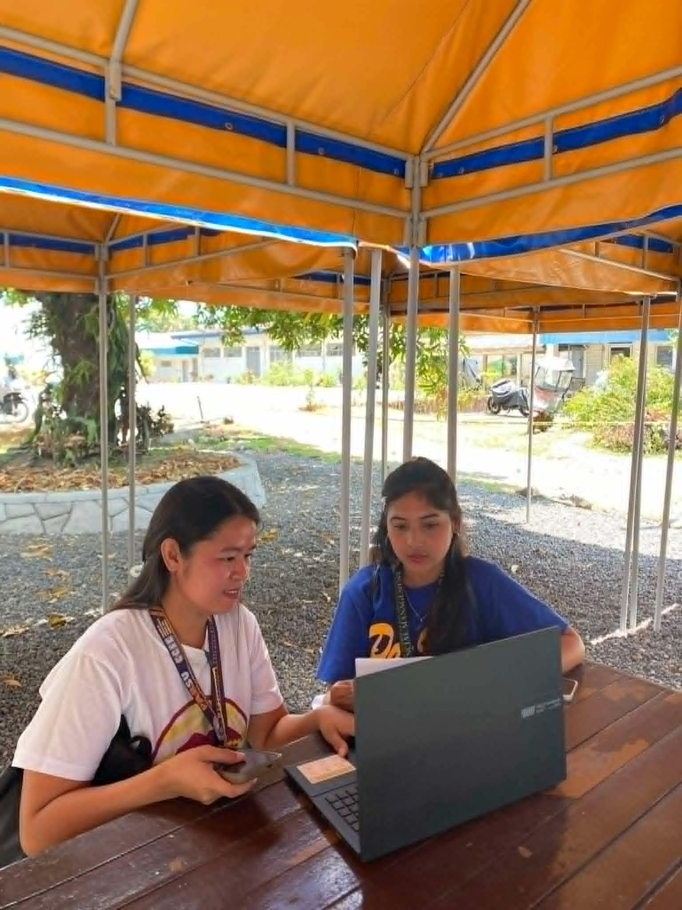
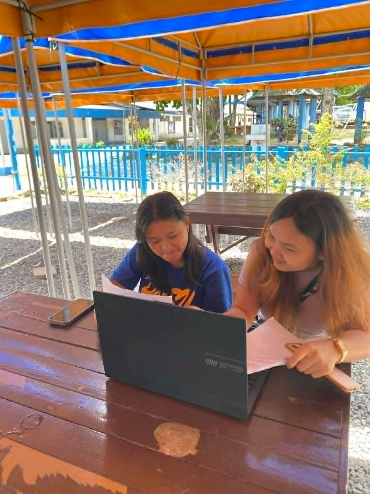
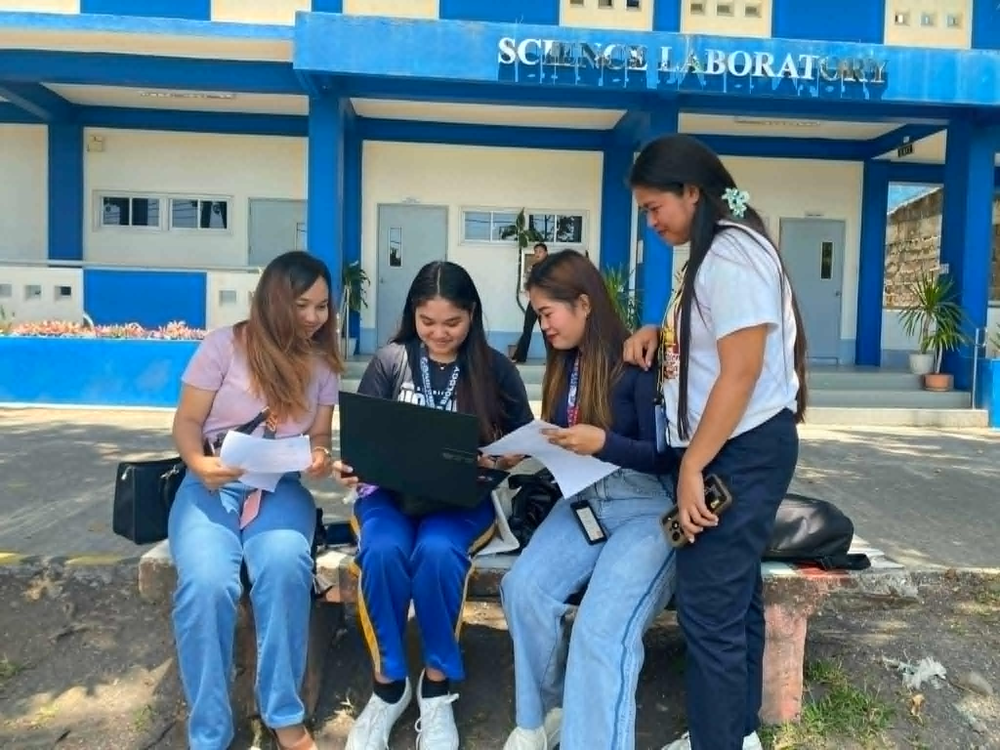
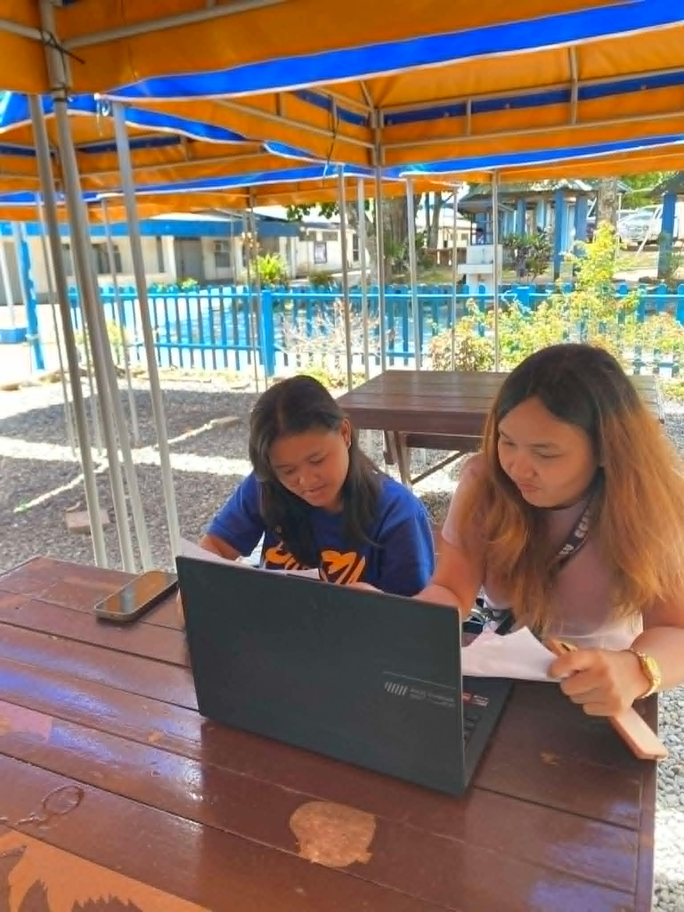
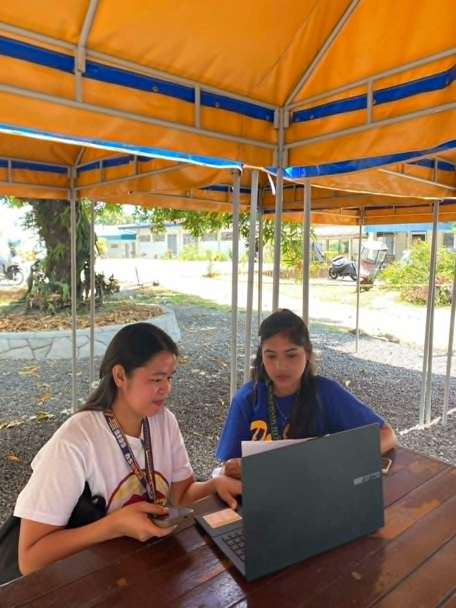
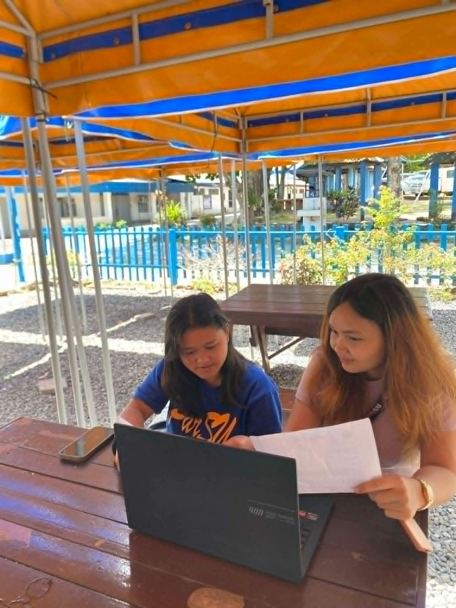
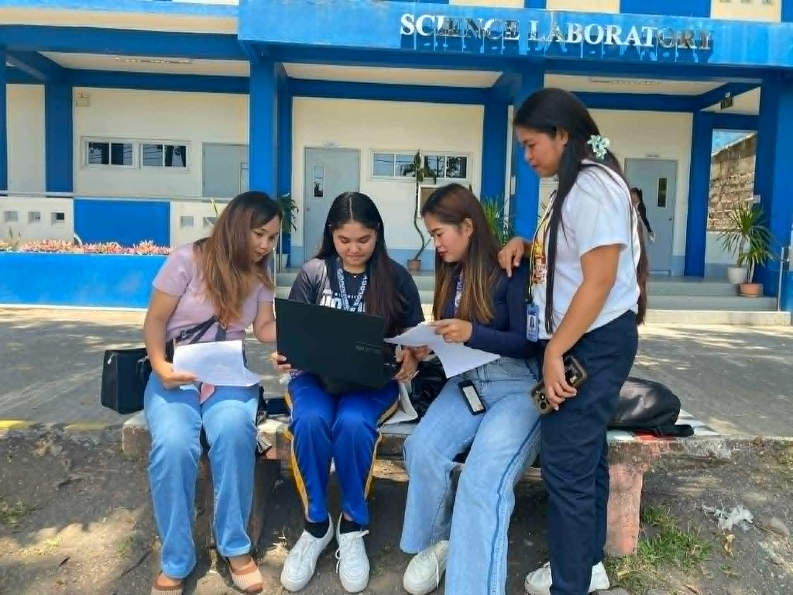
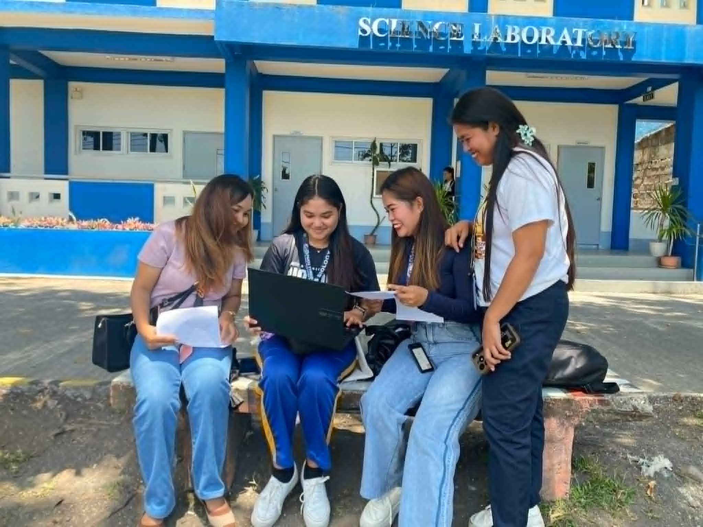
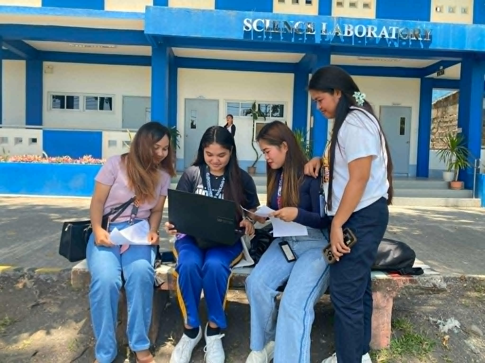
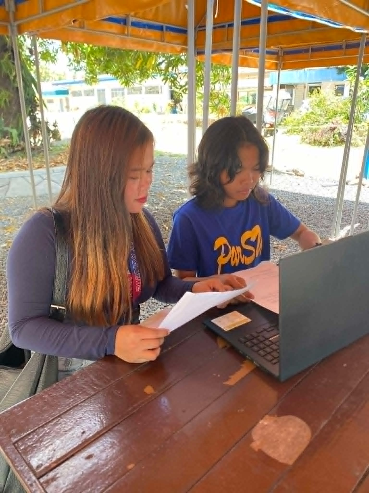
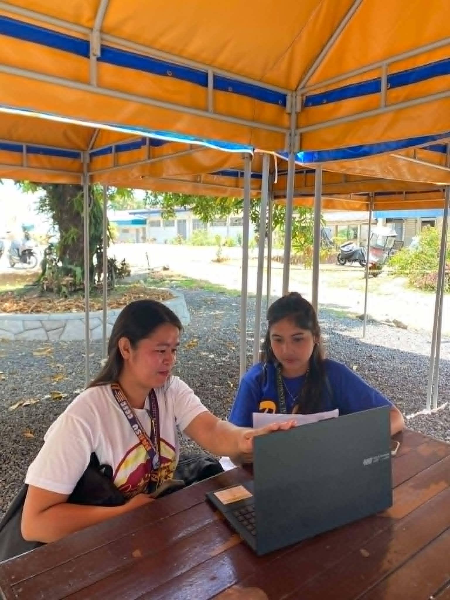
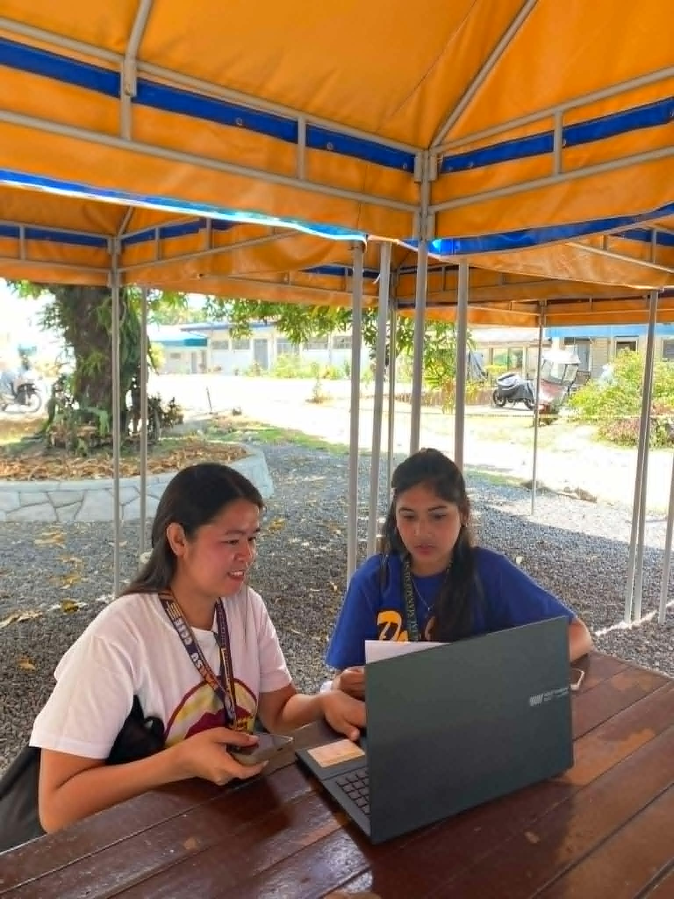
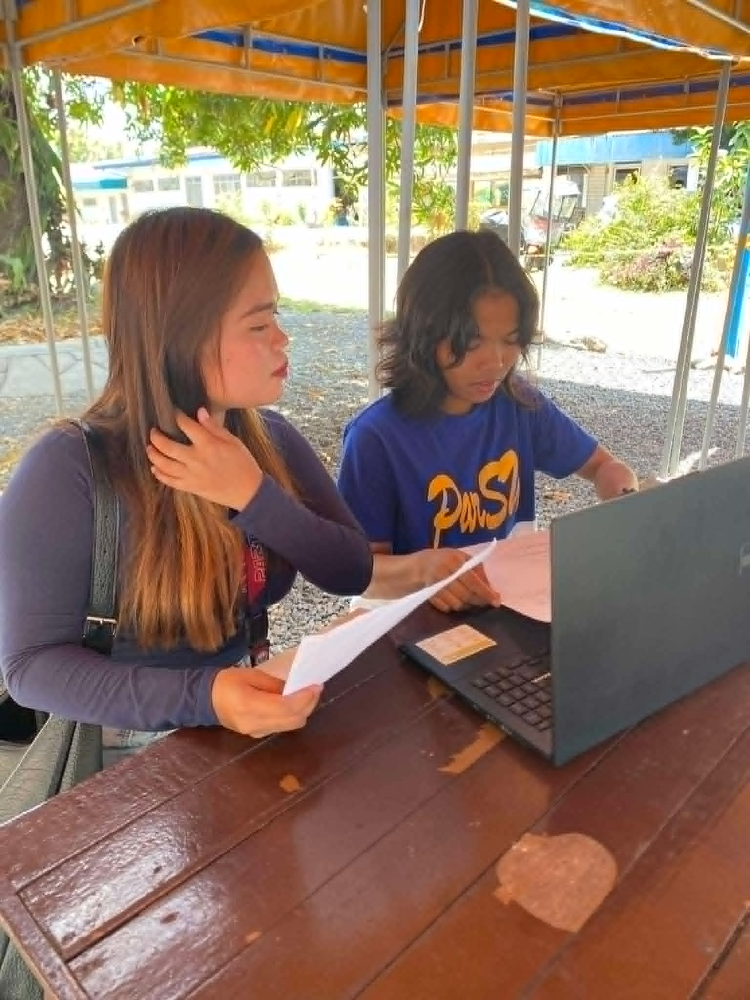
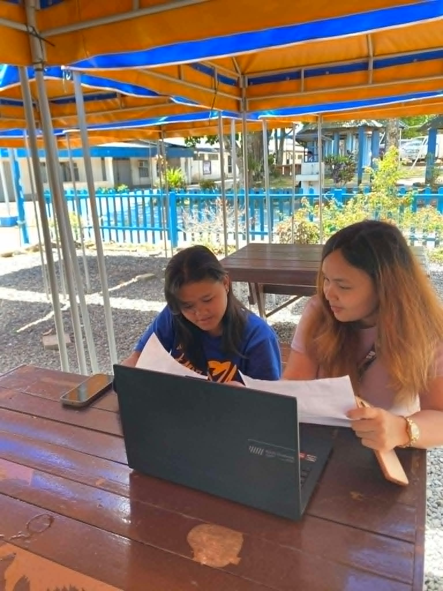